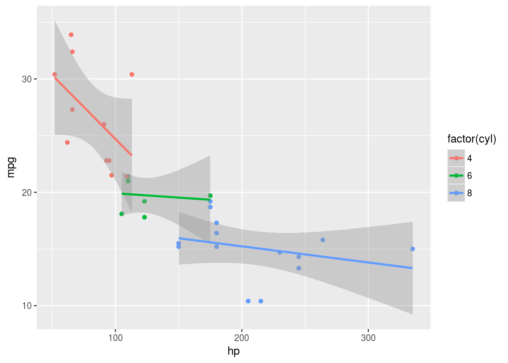

Purrr and map: an introduction
Packages
The usual, plus broom for later:
library(tidyverse)## ── Attaching packages ──────────────────────────────────────── tidyverse 1.2.1 ──## ✔ ggplot2 2.2.1.9000 ✔ purrr 0.2.4
## ✔ tibble 1.4.2 ✔ dplyr 0.7.4
## ✔ tidyr 0.8.0 ✔ stringr 1.3.0
## ✔ readr 1.1.1 ✔ forcats 0.3.0## ── Conflicts ─────────────────────────────────────────── tidyverse_conflicts() ──
## ✖ dplyr::filter() masks stats::filter()
## ✖ dplyr::lag() masks stats::lag()library(broom)“For each”
One of the commonest programming tasks is to do something “for each” of something else. For example, suppose you have a vector of values x like this:
x=2:6
x## [1] 2 3 4 5 6and you want to produce a new vector y whose values are twice the corresponding ones in x. The obvious way to think of doing that is something that most programming languages have, R included: a “for loop”.
The way that goes is that you first initialize a vector to hold the results, and then you fill that vector one element at a time:
y=numeric(5)
for (i in 1:5) {
y[i]=2*x[i]
}
y## [1] 4 6 8 10 12This works, but it has a lot of overhead: we have to initialize y, then we have to create a looping variable i, which we have to note goes from 1 to 5, and then we have the mechanism of the for loop. The actual doubling-x part is one of our four lines of code, and what we are actually doing gets rather hidden.
If you are an R veteran, you’ve probably heard that “for loops are slow” (less true than it was), or that you should use one of the apply functions (which I am here arguing against, since the map functions are easier and more uniform). A lot of R functions are “vectorized”, meaning that you can feed them a vector and they will return you a vector consisting of whatever you ask for, elementwise:
y=2*x
y## [1] 4 6 8 10 12with nary a loop in sight. Below, I show you another way of “hiding” the loop mechanism, one that I think is very useful.
But, sometimes, a loop is a good way to solve a problem. For example, the first two Fibonacci numbers are 1, and each one after that is the sum of the previous two. Referring to other elements of a vector by number is a prime reason to use a for loop:
fib=numeric(10)
fib[1]=1
fib[2]=1
for (i in 3:10) {
fib[i]=fib[i-1]+fib[i-2]
}
fib## [1] 1 1 2 3 5 8 13 21 34 55Map
Here’s another way to do “for each”. I’ll use the same example, doubling each of a list of numbers:
double_it=function(w) {
2*w
}
y=map_dbl(x,double_it)
y## [1] 4 6 8 10 12How does this work? I first write a little function that does “one”: in this case, it takes one number and doubles it. Then, the map_dbl line says “for each of the things in x, run the function double_it on that thing”.
The idea is not that you would actually use this idea for this problem, since multiplication is vectorized, but that you use the idea when what you are doing is not vectorized, so that you have to use some kind of for-each mechanism yourself.
To decide what kind of map function to use (there are several), look at what your function outputs, here something that could be a decimal number.
There are map_dbl, map_int, map_lgl (logical, ie. true/false), map_chr (and possibly others) to choose from.
Here’s (yet) another way to do it:
y=map_dbl(x,~2*.)
y## [1] 4 6 8 10 12This is a way to avoid writing a function: “for each thing in x, times it by 2”. When you do it this way, start with a squiggle, and what follows is a calculation containing a dot, where the dot represents the value that is being for-eached. (I didn’t say that very well; I mean each of the values of x, in turn, here.)
Personally, I find the squiggle way more confusing than the write-a-little-function way. Perhaps this is because I have used the apply functions, and this is how they work. I’m aware that this is a matter of taste.
As Jenny Bryan says, the map variants are not a way of avoiding writing a loop; rather, they are a way of having someone else write the loop for you, so that it is happening in the background and you can concentrate on what you want the loop to do, rather than how to make it work. Note how much clearer the code with the map is, compared to the code with the for.
There’s one more thing: the function map. That’s used when the for-each part returns more than one value. A rather silly example is this:
up_down=function(w) {
c(w-2,w+1)
}
up_down(3)## [1] 1 4This goes in a map like this:
map(x,up_down)## [[1]]
## [1] 0 3
##
## [[2]]
## [1] 1 4
##
## [[3]]
## [1] 2 5
##
## [[4]]
## [1] 3 6
##
## [[5]]
## [1] 4 7What comes out of map is a list, one list element for each value of x. In this case, each list element is a vector of two numbers, the first value two less than the input, the second one more. The numbers in square brackets say which element in the list we are looking at, not the value of x. (The first value of x is 2, so the values going with [[1]] are two less than 2 and one more than 2.)
Or, if you prefer it without defining a function:
map(x,~c(.-2,.+1))## [[1]]
## [1] 0 3
##
## [[2]]
## [1] 1 4
##
## [[3]]
## [1] 2 5
##
## [[4]]
## [1] 3 6
##
## [[5]]
## [1] 4 7Gotta say, as I write this, I’m coming around to the functionless way of doing it. When I was writing the above, I read it as “for each x, calculate it minus 2 and it plus 1”.
Map functions and data frames
The foregoing is not “tidy”, in the sense that we are used to working within data frames. I didn’t do that before, because I wanted to show you the map mechanism first. But the same idea works within a mutate in a data frame, with a twist that we see at the end.
Let’s make a data frame d that contains our numbers 2 through 6:
d=tibble(x=2:6)
d## # A tibble: 5 x 1
## x
## <int>
## 1 2
## 2 3
## 3 4
## 4 5
## 5 6and then make a column y that is double the x. There is the obvious way:
d %>% mutate(y=2*x)## # A tibble: 5 x 2
## x y
## <int> <dbl>
## 1 2 4.00
## 2 3 6.00
## 3 4 8.00
## 4 5 10.0
## 5 6 12.0and then there is the map_dbl way:
d %>% mutate(y=map_dbl(x,~2*.))## # A tibble: 5 x 2
## x y
## <int> <dbl>
## 1 2 4.00
## 2 3 6.00
## 3 4 8.00
## 4 5 10.0
## 5 6 12.0or with the function we wrote before:
d %>% mutate(y=map_dbl(x,double_it))## # A tibble: 5 x 2
## x y
## <int> <dbl>
## 1 2 4.00
## 2 3 6.00
## 3 4 8.00
## 4 5 10.0
## 5 6 12.0The idea is that the second thing inside map_dbl is either the name of a function, or a definition of a function, starting with a squiggle.
All right, back to that last one above that uses map. What happens there?
d %>% mutate(y=map(x,up_down))## # A tibble: 5 x 2
## x y
## <int> <list>
## 1 2 <dbl [2]>
## 2 3 <dbl [2]>
## 3 4 <dbl [2]>
## 4 5 <dbl [2]>
## 5 6 <dbl [2]>y is a thing called a list-column. We are used to data frame cells containing single numbers or single pieces of text, like a cell in a spreadsheet would, but tibble-type data frame cells can contain anything: vectors of numbers, as here, vectors of text, or even data frames.
To get at the things inside the list-column, we use unnest:
d %>% mutate(y=map(x,up_down)) %>%
unnest(y)## # A tibble: 10 x 2
## x y
## <int> <dbl>
## 1 2 0
## 2 2 3.00
## 3 3 1.00
## 4 3 4.00
## 5 4 2.00
## 6 4 5.00
## 7 5 3.00
## 8 5 6.00
## 9 6 4.00
## 10 6 7.00Now the individual values in y show up, with everything else (x, here) repeated as necessary.
“For each group”
Sometimes we want to do something “for each group” of observations in a data frame. If it’s simple, group_by and summarize will do the job. Let’s use the mtcars data set to illustrate, here getting the mean and SD of gas mileage for cars of each number of cylinders:
mtcars %>% group_by(cyl) %>%
summarize(xbar=mean(mpg), s=sd(mpg))## # A tibble: 3 x 3
## cyl xbar s
## <dbl> <dbl> <dbl>
## 1 4.00 26.7 4.51
## 2 6.00 19.7 1.45
## 3 8.00 15.1 2.56But what if we wanted something more complicated, for example the R-squared from the regression of gas mileage on horsepower for each number of cylinders? A graph first would give us an idea of what to expect:
ggplot(mtcars,aes(x=hp,y=mpg,colour=factor(cyl)))+geom_point()+geom_smooth(method="lm")
A somewhat negative relationship for the 4-cylinder cars, and weak, slightly negative, relationships for the rest. A good way to tackle this is to deliberately create a list-column of data frames containing everything but cyl, one for each number of cylinders:
mtcars %>% group_by(cyl) %>% nest()## # A tibble: 3 x 2
## cyl data
## <dbl> <list>
## 1 6.00 <tibble [7 × 10]>
## 2 4.00 <tibble [11 × 10]>
## 3 8.00 <tibble [14 × 10]>The things in the data column are data frames containing everything except cyl.
Next, we can take advantage of the fact that list-columns can contain anything, in this case fitted models:
mtcars %>% group_by(cyl) %>% nest() %>%
mutate(model=map(data,~lm(mpg~hp,data=.)))## # A tibble: 3 x 3
## cyl data model
## <dbl> <list> <list>
## 1 6.00 <tibble [7 × 10]> <S3: lm>
## 2 4.00 <tibble [11 × 10]> <S3: lm>
## 3 8.00 <tibble [14 × 10]> <S3: lm>To my mind, the easiest way of getting the R-squared value out of each model is to use glance from broom:
mtcars %>% group_by(cyl) %>% nest() %>%
mutate(model=map(data,~lm(mpg~hp,data=.))) %>%
mutate(gl=map(model,glance))## # A tibble: 3 x 4
## cyl data model gl
## <dbl> <list> <list> <list>
## 1 6.00 <tibble [7 × 10]> <S3: lm> <data.frame [1 × 11]>
## 2 4.00 <tibble [11 × 10]> <S3: lm> <data.frame [1 × 11]>
## 3 8.00 <tibble [14 × 10]> <S3: lm> <data.frame [1 × 11]>and the final step is to pull our R-squared value out as r.squared. To extract something by name, use the name as a piece of text in a map:
mtcars %>% group_by(cyl) %>% nest() %>%
mutate(models=map(data,~lm(mpg~hp,data=.))) %>%
mutate(model_glance=map(models,glance)) %>%
mutate(rsq=map_dbl(model_glance,"r.squared"))## # A tibble: 3 x 5
## cyl data models model_glance rsq
## <dbl> <list> <list> <list> <dbl>
## 1 6.00 <tibble [7 × 10]> <S3: lm> <data.frame [1 × 11]> 0.0161
## 2 4.00 <tibble [11 × 10]> <S3: lm> <data.frame [1 × 11]> 0.274
## 3 8.00 <tibble [14 × 10]> <S3: lm> <data.frame [1 × 11]> 0.0804R-squared is close to zero for the 6-cylinder and 8-cylinder cars, and somewhat larger for the 4-cylinder cars. This is in line with what we would guess from the graph.
The map2 family
Sometimes the for-each contains two things. For example, suppose we have this data frame:
d=tribble(
~p, ~q,
10, 3,
11, 6,
12, 4,
13, 1
)
d## # A tibble: 4 x 2
## p q
## <dbl> <dbl>
## 1 10.0 3.00
## 2 11.0 6.00
## 3 12.0 4.00
## 4 13.0 1.00and for some reason we want to calculate 3 times p minus q all the way down. The obvious way is this one:
d %>% mutate(z=3*p-q)## # A tibble: 4 x 3
## p q z
## <dbl> <dbl> <dbl>
## 1 10.0 3.00 27.0
## 2 11.0 6.00 27.0
## 3 12.0 4.00 32.0
## 4 13.0 1.00 38.0and for this kind of vectorized problem there is no need to look further. But, how would we do this using map ideas? Let’s write a little function first:
my_minus=function(u,v) {
3*u-v
}Now, how are we going to use map_dbl? Our function takes two inputs, but there is only one slot for a “for each” in map_dbl. The answer is to instead use map2_dbl; it and its cousins take two inputs to for-each over, and then the name of a function, thus:
d %>% mutate(z=map2_dbl(p,q,my_minus))## # A tibble: 4 x 3
## p q z
## <dbl> <dbl> <dbl>
## 1 10.0 3.00 27.0
## 2 11.0 6.00 27.0
## 3 12.0 4.00 32.0
## 4 13.0 1.00 38.0How to do this without defining a function first? We can’t use . to represent “it” any more, since we have two “it”s. We have to call the first input .x and the second one .y:
d %>% mutate(z=map2_dbl(p,q,~3*.x-.y))## # A tibble: 4 x 3
## p q z
## <dbl> <dbl> <dbl>
## 1 10.0 3.00 27.0
## 2 11.0 6.00 27.0
## 3 12.0 4.00 32.0
## 4 13.0 1.00 38.0read as “for each p and q (in parallel), calculate three times the first one minus the second one”.
The map2 functions always work in parallel: one thing from the first column combined with the corresponding thing from the second column. But sometimes we want all combinations of something in the first column with something in the second. For example, we might be making a multiplication table. The for-loop way of handling that is to use nested loops, one inside the other, eg:
for (i in 1:3) {
for (j in 1:4) {
z=i*j
print(str_c(i," times ",j," is ",z))
}
}## [1] "1 times 1 is 1"
## [1] "1 times 2 is 2"
## [1] "1 times 3 is 3"
## [1] "1 times 4 is 4"
## [1] "2 times 1 is 2"
## [1] "2 times 2 is 4"
## [1] "2 times 3 is 6"
## [1] "2 times 4 is 8"
## [1] "3 times 1 is 3"
## [1] "3 times 2 is 6"
## [1] "3 times 3 is 9"
## [1] "3 times 4 is 12"If you’ve learned Python or a similar language, you have probably done a lot of exercises like this. But map2 only works in parallel, as above.
The trick is to make something that map2 can use in parallel, and a handy tool for that is crossing from tidyr. For example:
crossing(x=1:3,y=1:4)## # A tibble: 12 x 2
## x y
## <int> <int>
## 1 1 1
## 2 1 2
## 3 1 3
## 4 1 4
## 5 2 1
## 6 2 2
## 7 2 3
## 8 2 4
## 9 3 1
## 10 3 2
## 11 3 3
## 12 3 4and then you can say
crossing(p=1:3,q=1:4) %>%
mutate(z=map2_dbl(p,q,~.x*.y))## # A tibble: 12 x 3
## p q z
## <int> <int> <dbl>
## 1 1 1 1.00
## 2 1 2 2.00
## 3 1 3 3.00
## 4 1 4 4.00
## 5 2 1 2.00
## 6 2 2 4.00
## 7 2 3 6.00
## 8 2 4 8.00
## 9 3 1 3.00
## 10 3 2 6.00
## 11 3 3 9.00
## 12 3 4 12.0This is tidy, but usually multiplication tables have one variable in the rows and other in the columns, so we have to untidy it:
crossing(p=1:3,q=1:4) %>%
mutate(z=map2_dbl(p,q,~.x*.y)) %>%
spread(q,z)## # A tibble: 3 x 5
## p `1` `2` `3` `4`
## <int> <dbl> <dbl> <dbl> <dbl>
## 1 1 1.00 2.00 3.00 4.00
## 2 2 2.00 4.00 6.00 8.00
## 3 3 3.00 6.00 9.00 12.0Of course, when I were a lad, multiplication tables went up to \(12 \times 12\), and we had to like it.